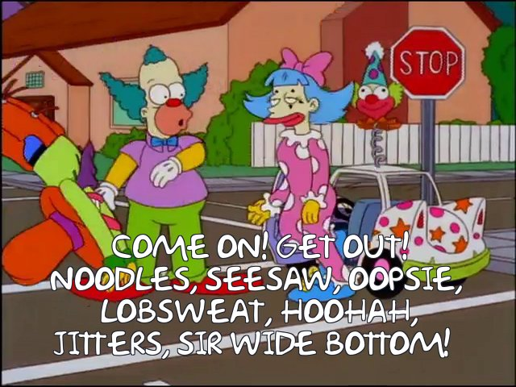
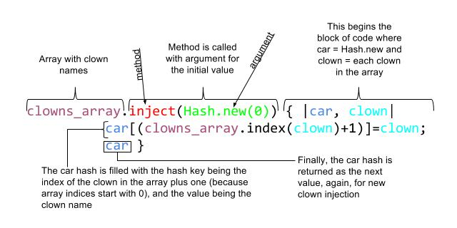
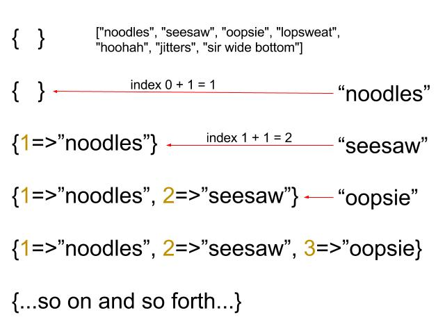

enumerable methods: inject
…or the physics of a clown car

We’ve all seen that archetypal clown car scene in the movies or tv shows–the one where an impossible amount of clowns get out or into a small car. It actually reminds me of a very neat method for objects in the Ruby language known as enumerables. But perhaps I’m getting a little ahead of myself. Let me take you back to the beginning, to the root of the language, the core of programming, the genesis of objects… ok… you get it.
In a previous post, I covered a topic on arrays and hashes. Remember those? If not, they look a little like this:
clowns_array = ["noodles", "seesaw", "oopsie",
"lopsweat", "hoohah", "jitters",
"sir wide bottom"]
=> ["noodles", "seesaw", "oopsie", "lopsweat", "hoohah", "jitters", "sir
wide bottom"]
clown_car_hash = { clown_1: "noodles",
clown_2: "seesaw",
clown_3: "oopsie",
clown_4: "lopsweat",
clown_5: "hoohah",
clown_6: "jitters",
clown_7: "sir wide bottom" }
=> {clown_1: "noodles", clown_2: "seesaw", clown_3: "oopsie", clown_4:
"lopsweat", clown_5: "hoohah", clown_6: "jitters", clown_7: "sir
wide bottom"}
Everything in Ruby is considered an object, and every object in part has a class, but it all ultimately ends up being an object. So why have that class-object distinction? Well classes simply help organize the attributes and behaviors of an object so they become predictable. Just like objects in the real world, objects in Ruby can be described by how and what they respond to. For example, had you a shadowy, fuzzy figure in front of you, and you happen to call its bark behavior (or method as it is known in Ruby), and it responds, “woof!”, then you know you might be dealing with an object of the Dog class. These methods aren’t only useful for determining what you’re dealing with, they can also alter, mold, or expand the use of the object.
Following this train of thought, then, we can start doing more with arrays and hashes, container objects, that are part of the Enumerable class. What this means is that, arrays and hashes contain elements that can be enumerated, or counted on one by one. It’s by this enumerable trait, that most methods related to arrays and hashes allow you to read (array.first for example, diplays the first element) or control the contents, or elements, inside them. And there are a number of them, but the one that I will focus on, is the inject method.
clowns_array.inject(Hash.new(0)) do |car, clown|
p "#{car[(clowns_array.index(clown)+1)] = clown} << #{clown}"
car
end
"noodles << noodles"
"seesaw << seesaw"
"oopsie << oopsie"
"lopsweat << lopsweat"
"hoohah << hoohah"
"jitters << jitters"
"sir wide bottom << sir wide bottom"
=> {1=>"noodles", 2=>"seesaw", 3=>"oopsie", 4=>"lopsweat", 5=>"hoohah", 6=>"jitters", 7=>"sir wide bottom"}
Right now don’t worry if you don’t understand the code up there. It’s not normally how you would use the method, and I did it that way to expose the inner workings of the method. I will break it down slowly. On the surface, the inject method can be a very simple method to condense (or reduce) the contents of an array. Mathematically, this means you can take an array of numbers and squish them together to get their sum, or squish them with multiplication and get the factorial.
mathary = (1..5).to_a
=> [1, 2, 3, 4, 5]
mathary.inject(:*)
=> 120
The code above creates a math array with the number one through five, and using the inject method with the multiplication symbol, reduces the numbers to a single number–the result of multiplying all those numbers together. But using the method this way makes the inject method appear to be a misnomer, why is it called inject? Ah, therein lies our clown car example…
The Anatomy of Enumerable#inject

Taking the method and expanding it to its most complicated use case, we can see that the method is called on an array, it takes an argument in parenthesis, which sets the initial value (anything from a number to another new array, or new hash–coincidentally this is the type of object that will be returned if no other is specified), finally a block is passed with further instructions. Some notable things about the block: the initial value is set as one of the variables (in our case the car), and the iteration of each element is set to the second variable (clown), this means that the code will execute every time using each clown once. This code indicates that the clown should be injected into the clown car by making the clown index in the array (one is added because array indices start with 0) the hash key, and the clown name becomes the value (again review the previous post to understand this). Finally, the car is returned to become the car variable again, and the next clown is injected, if the last line is omitted, then the last clown used becomes the new car variable and the next clown is then attempted to be injected. As you can see, that doesn’t make sense in this context, a clown being injected into another clown–hilarious as that actually sounds, but it is the reason why using inject mathematically, works. Essentially, you’re injecting each value back on the result of the operations performed on the previous values.
But now back to our clown car example, a diagram might help visualize what is going on. If the initial value, the clown car, is the hash (the two curly braces), and the clowns available is the array, then the code process looks like this:

And with that, I urge you to imagine these clowns hilariously jumping into a small car with seemingly limited space. If you would like to learn more about Ruby Enumerable methods you can also check out the Ruby Docs here. Also feel free to reach out by using my newly created contact page here.